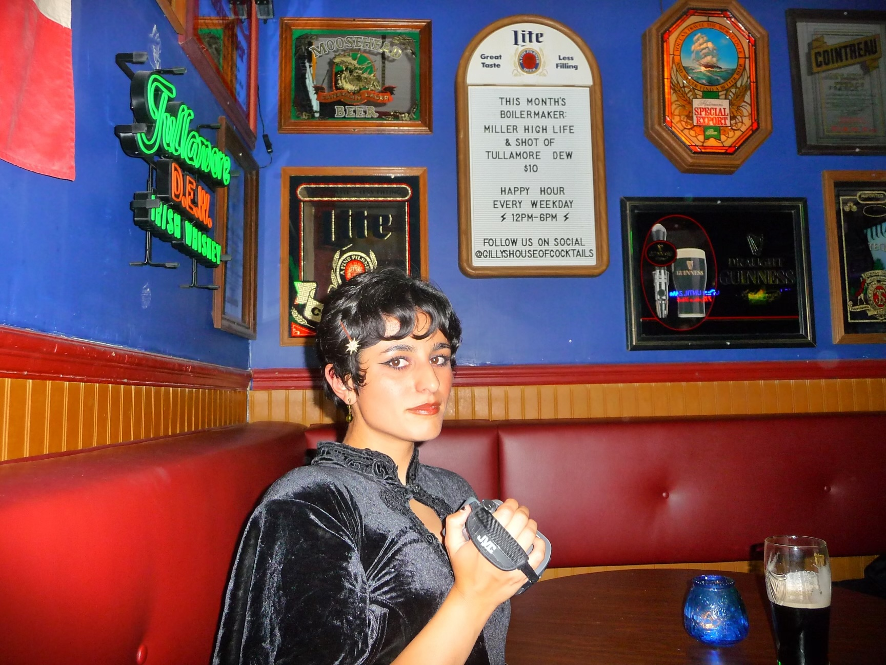

My absolute biggest passion is vintage fashion and music! I have a big collection of mod, psychedelic, and formal-wear dresses, skirts, and blouses that tend to lean towards maximalist, colorful patterns. I mostly collect 60s and 70s clothing, but I also have 50s and 80s clothing. I am crazy about it - sometimes when I look at my clothing, I'll give my dresses a little kiss to give them some love. Yes, my boyfriend thinks I'm crazy and I think he's right! Haha! I am very into the 1960s Haight Ashbury scene, so besides collecting vintage clothing I also listen to a lot of 60s records. Here are some of my favorite musicians:
I completed my bachelor's in speculative design at UC San Diego in 2024, but I realized that degree did not open me up to the types of jobs I wanted - the degree was too theoretical and not technical enough to find work in graphic design. So, I enrolled in San Diego City College to complete a graphic and interaction design certificate program and am looking to supplement my design skills with web design & development skills.
I have taken fundamental graphic design courses, specifically in history, introductory technical courses, and typography fundamentals. Currently, I am taking advanced typography, the first in a 3-course sequence in interaction design, and (obviously) this class!
